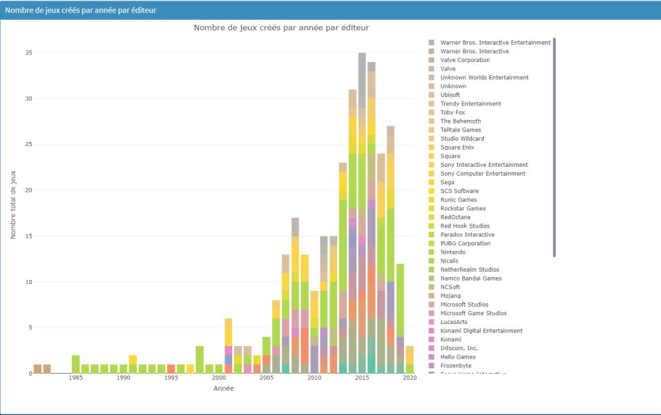
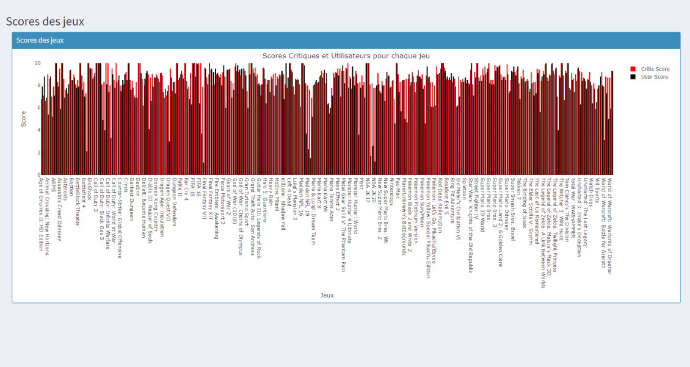

Dimension marco
Jeux vidéos en réseau : Top 50 des jeux vidéos les plus vendus entre 1984 et 2014
Force Directed Tree
-
Catégorisation des jeux sortis par années
Description : Cette visualisation représente la catégorisation des jeux sortis par années.
Légende : Année > Titre du jeu > Note critique
Type de visualisation : Quantitatif (massif), catégoriel
Jeu de données :- Initial : Kaggle, Video Game Sales Data, https://www.kaggle.com/datasets/holmjason2/videogamedata?rvi=1
- Tranche d’années filtrée : 2000 à 2020
- Sur Google Sheets, filtrer le jeu de données selon les éléments souhaités : Year, Name, Critic_Score
- Filtrer l’affichage par année, ordre croissant
- Importer le fichier .CSV sur Rawgraphs old
- Création de la hiérarchie du modèle “Cluster Dendrogram”
- Export au format .JSON
- Fork et personnalisation du modèle “Collapsible Cluster Dendrogram” sur Observable
Nombre d’éditeurs de jeux vidéo par pays,
Interactive map,
-
Explication
Fréquence des sorties par éditeurs par année
Description : Cette visualisation présente la fréquence des sorties de jeux par éditeurs par année.
Légende :- Tableau de données : Pays > Nombre de développeurs de jeux vidéos
- Map interactive : Nombre de développeurs de jeux vidéos par pays
Jeu de données : Wikidata
URL Querry : https://w.wiki/8thD
URL Résultat : https://w.wiki/8thD
Méthodologie :- Importation et Nettoyage des données sur Google Sheets
- Filtrage des colonnes sur Google Sheets
- Tri des répétitions des pays avec la formule “=UNIQUE(B2:B965)”
- Comptage du nombre de répétitions avec la formule “=COUNTIF(B2:B965, E2)” (si cela n’a pas marché, comptage manuel)
- Génération de la visualisation via Google Sheets
- Les États-Unis dominent largement l'industrie du jeu vidéo avec 247 studios de développement.
- L'Europe est bien représentée, en particulier l'Allemagne, la France, et la Lettonie.
- L'Asie contribue significativement, avec la Chine, le Japon, et la Corée du Sud.
- Certains pays ont une présence limitée ou nulle.
- Globalement, l'industrie du jeu vidéo montre une diversité mondiale avec une tendance à la croissance.
Le marché du jeu vidéo
Bar Chart

-
Vue globale des sorties de jeux par plateforme par année
Description : Cette visualisation offre une vue globale des sorties de jeux par plateforme par année.
Légende :- Bar Chart : Plateforme > Nombre total de jeux
- Line Chart : Plateforme > Nombre total de jeux > Année
Jeu de données : Kaggle, Video Game Sales Data, https://www.kaggle.com/datasets/holmjason2/videogamedata?rvi=1, 13,000 jeux sortis entre 1977 et 2020, provenant de la base de données VGChartz
Méthodologie :- Nettoyage des données
- Filtrage : name (somme des jeux par plateforme), année et somme des jeux
- Génération de la visualisation via Rstudio
combien de jeux vidéos avez-vous sortis cette année-là ?
Dashboard/Bar Chart
-
Fréquence des sorties par éditeurs par année
Description : Cette visualisation présente la fréquence des sorties de jeux par éditeurs par année.
Légende :- Tableau de données : Pays > Nombre de développeurs de jeux vidéos
- Map interactive : Nombre de développeurs de jeux vidéos par pays
Jeu de données : Wikidata
URL Querry : https://w.wiki/8thD
URL Résultat : https://w.wiki/8thD
Méthodologie :- Importation et Nettoyage des données sur Google Sheets
- Filtrage des colonnes sur Google Sheets
- Tri des répétitions des pays avec la formule “=UNIQUE(B2:B965)”
- Comptage du nombre de répétitions avec la formule “=COUNTIF(B2:B965, E2)” (si cela n’a pas marché, comptage manuel)
- Génération de la visualisation via Google Sheets
- Les États-Unis dominent largement l'industrie du jeu vidéo avec 247 studios de développement.
- L'Europe est bien représentée, en particulier l'Allemagne, la France, et la Lettonie.
- L'Asie contribue significativement, avec la Chine, le Japon, et la Corée du Sud.
- Certains pays ont une présence limitée ou nulle.
- Globalement, l'industrie du jeu vidéo montre une diversité mondiale avec une tendance à la croissance.
Score critique vs score utilisateur : quelle différence ?
Bar Chart
-
Nombre sur quoi ?, Dashboard/Bar Chart
Description : Cette visualisation représente le nombre total de jeux sortis par plateforme selon l’année.
Légende :- Tableau de données : Name > Plateform > Publisher > Développeur > Critique_Score > User_Score > Total_Shipped > Year
- Graphique à barres : Nombre total de jeux par plateforme par année
Jeu de données : Kaggle, Video Game Sales Data, https://www.kaggle.com/datasets/holmjason2/videogamedata?rvi=1, 13,000 jeux sortis entre 1977 et 2020, provenant de la base de données VGChartz
Méthodologie :- Nettoyage des données
- Filtrage : somme des jeux par plateforme, année et somme des jeux
- Génération de la visualisation via Rstudio
Sur certaines plateformes, les jeux sortent en continu, tandis que pour d’autres, les sorties s’arrêtent, comme par exemple NES.